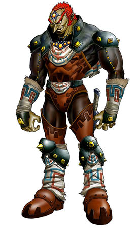
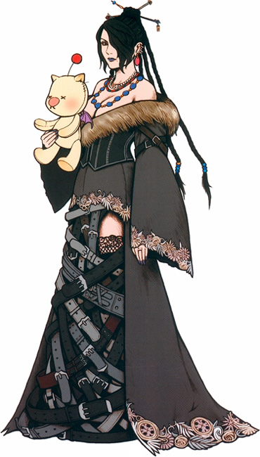
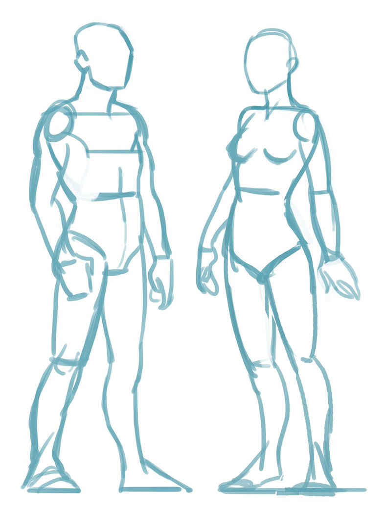
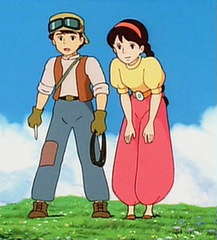

Costumes et character design
Le costume est un élément particulièrement important du character design. Plus encore qu'à son visage, c'est à ses vêtements et son allure qu'on reconnaît un personnage. Dans un jeu en pixel art par exemple, on ne peut pas, la plupart du temps, reconnaître un visage, pour des raisons de résolution.

L'article qui suit vise à développer quelques points concernant le design de costumes. Je tiens à préciser qu'il ne s'agit pas d'une « méthode » à suivre, mais juste d'une réflexion.
Qu'est-ce qu'un design ?
Avant de se lancer dans un design de costume, essayons de comprendre quel est le but que nous visons. Un design, étymologiquement, est à la fois un dessin et un dessein, c'est-à-dire une intention, un projet. Il ne s'agit donc pas ici de simplement dessiner un vêtement, mais de faire passer des informations au joueur ou au spectateur : le vêtement a pour fonction de décrire le personnage.
La première chose à faire lorsqu'on réfléchit au costume d'un personnage est de se rappeler qu'un costume fait passer un message : il définit l'origine géographique et sociale du personnage et il peut même informer — ou induire en erreur — le joueur sur sa personnalité.
Prenons un exemple connu. Ganondorf, le grand méchant de la série des Zelda, est un méchant et une brute épaisse, tout le monde le sait. Mais surtout, cela se voit immédiatement à ses vêtements : énorme armure de plaques métalliques, piques, lambeaux de tissus déchirés, chaussures à coques. C'est un Gerudo, comme en témoignent les symboles rouges et bleus sur sa tenue — en cohérence avec le reste de l'univers — et c'est un personnage d'un certain rang — à savoir un roi Gerudo — comme en témoignent les bijoux qu'il porte. Le choix des couleurs ne présage rien de bon non plus : du noir et du brun sombre, entrecoupés d'un blanc terne — auxquels s'ajoutent par ailleurs des cheveux rouge vif.

Au premier coup d’œil et sans même connaître le personnage, le joueur a déjà une grande quantité d’informations le concernant. C’est cela la fonction même du costume dans un jeu : il conditionne la façon dont le joueur va appréhender le personnage.
C'est pour cette raison qu'il vaut mieux commencer en se posant la question suivante : « Quelle impression ai-je envie que ce personnage donne au joueur ? » Pour réussir à communiquer autant d'informations, il faut commencer par se donner les éléments que l'on veut voir apparaître dans le design ou pour le dire autrement, établir le cahier des charges du costume.
Une fois les contraintes définies, il devient beaucoup plus simple de dessiner, car un costume se construit au moins autant dans sa tête qu'au bout de son crayon.
Messages
Intéressons nous maintenant aux types de messages que peut transmettre un costume.
Un costume permet de situer un personnage géographiquement et culturellement dans l'univers. Dans beaucoup de jeux et plus particulièrement les RPG, les vêtements varient d'une région à l'autre et certains lieux ont une culture d'autant plus marquante qu'elle rappelle une culture existante : Nasrad, dans Skies of Arcadia est conçue pour évoquer le Proche-Orient. En choisissant et en réservant certains motifs, certaines couleurs, certains tissus à une région déterminée du jeu, vous marquez plus fortement son identité culturelle. Ceci permet par exemple de reconnaître immédiatement un voyageur qui a quitté sa ville d'origine et d'approfondir l'univers du jeu.
Un costume permet de donner une idée du métier ou du « job » d'un personnage. Un soldat et un mage n'auront pas les mêmes vêtements. Il permet de plus de situer le personnage dans une hiérarchie : les vêtements d'un paysan n'auront pas le luxe d'étoffes et de bijoux de ceux d'un riche marchand. Du point de vue du gameplay, ceci permet au joueur de s'y retrouver plus facilement : s'il cherche un garde de la ville, il le repère immédiatement à son armure, alors que s'il cherche un clochard, ce sont ses haillons qui permettront de le voir tout de suite.
Un costume exprime aussi l'importance d'un personnage. Les protagonistes de l'histoire méritent, en raison de leur importance dans le scénario, un design plus élaboré, plus complexe que celui des simples PNJ. C'est sur eux qu'il faut fournir le maximum du travail et c'est à eux qu'il faut réserver les accessoires et les détails. C'est le même principe qui fait qu'on réserve toujours plus de polygones pour les modèles 3D des personnages principaux.
Pour finir, un costume situe un personnage dans une époque. Des combinaisons cybernétiques agrémentées de lumières bleues caractérisent immédiatement un jeu situé dans le futur ou dans un univers de science-fiction, alors que des armures de métal ouvragées vous placent dès le départ dans un univers médiéval. A cet égard, il peut être intéressant d'étudier les vêtements de différentes époques, pour comprendre ce qui fait leur spécificité.
Références
Pour élaborer un costume, il est très important d'aller chercher des références de costumes existants et ce pour plusieurs raisons. Cela permet :
- de comprendre comment un vêtement est conçu et pourquoi on l'utilise.
- de dessiner de façon plus juste.
- d'enrichir son « vocabulaire graphique » et de donner plus de variété à ses personnages.
- de savoir quels vêtements étaient utilisés dans tel lieu ou à telle époque.
N’hésitez pas à puiser partout, même là où vous n’en auriez pas l’idée au premier abord : un bon designer se doit de ratisser très large. Allez voir le travail d'artistes que vous appréciez (ou même que vous n'appréciez pas, pour essayer de voir les écueils à éviter), fouiller les expositions ou les livres d'histoire, utilisez des références photographiques, regardez comment sont fabriqués vos propres vêtements, renseignez vous sur les usages et les techniques qui régissent la fabrication d'un vêtement, intéressez vous au domaine de la mode (au sens le plus large qui soit).
Je vous encourage personnellement à aller voir du côté de la mode, il y a du bon à prendre — après, tout ne l’est pas, mais un bon designer doit être capable de faire le tri. Ainsi, un designer comme Tetsuya Nomura — qu’on l'aime ou pas — a objectivement renouvelé le design du RPG en y introduisant des éléments tirés du monde de la mode : le blouson à col de fourrure de Squall, les bijoux comme Chronos, les ceintures de la robe de Lulu, la coupe à pics de Cloud, le design urbain de The World Ends With You inspiré du domaine du graffiti, etc.

Il s'agit d'un point que je ne soulignerai jamais assez, mais c'est ce qui permet de ne pas tourner en rond et de refaire tout le temps la même chose. Il y a trop de jeux ou de films où le design des costumes ont été vus et revus, en particulier dans les domaines de l'heroic fantasy et de la science-fiction.
Et je me permets d'ajouter au passage un lien vers un remarquable cours de klindicative, ainsi qu'un lien vers le site My Armoury qui référence une foultitude d’épées et autres armes anciennes.
Cadre de travail
Il est maintenant essentiel de savoir comment vous comptez travailler.
Après avoir défini les concepts et les idées qui doivent apparaître chez le personnage à travers son costume, on peut commencer à faire des recherches. Pour commencer, il n'est pas nécessaire de se soucier d'anatomie ou de structure, il faut essayer de chercher le plus largement possible. Une fois des idées mises sur le papier, il est temps d'essayer de mettre ça au propre.
J'ai remarqué que beaucoup de gens dessinent directement les vêtements du personnage, sans dessiner son corps au préalable. Ceci peut être utile pour les premières recherches, afin d'aller vite et de ne pas trop se restreindre tout de suite. Néanmoins, pour la suite, cela peut devenir très problématique. En matière de dessin pur, poser les vêtements dans le vide est une mauvaise technique, qui aboutit à des postures bancales ou des « tricheries » dans le dessin — des tissus immenses et mous qui masquent l'anatomie ou des mains cachées dans le dos. Généralement, ceci révèle immédiatement le (mauvais) niveau du dessinateur au spectateur.
Aussi, pour construire vos costumes, il vaut mieux systématiquement dessiner le corps, même très simplifié, puis dessiner les vêtements par-dessus. Ceci permet de mieux poser les tissus, d’avoir des personnages plus stables et de construire des drapés plus élégants. Voici des exemples de « mannequins » qu'on peut utiliser.

Une fois le mannequin d'un personnage dessiné, il suffit de le copier coller autant de fois que voulu et de tester différents costumes dessus, à partir des recherches préliminaires. Ceci évite d'avoir à redessiner le personnage à chaque fois et permet de mieux comparer les différents costumes, sans être influencé par la pose : on ne s’intéresse ici qu’à la variété des vêtements et pas à celle des corps. En plus, ça vous fera travailler l'anatomie : que demande le peuple ? Ces recherches de Matt Rhodes, character designer sur Mass Effect 2 constituent un très bel exemple.
Faîtes attention à ce que le mannequin utilisé ait la carrure du personnage dont vous dessinez le costume : le dessin des vêtements n'est pas le même pour un homme et pour une femme, pour un adulte et pour un enfant, pour un nain et pour un géant.
Principes de design
Je ne prétends pas dresser ici une liste de lois immuables qui permettraient de parfaitement réussir un design. Il s'agit juste de remarques que j'ai pu me faire en dessinant et en discutant avec d'autres joueurs.
Less is more. Trois petits mots prononcés par l'architecte Mies Van der Rohe et qui ont bouleversé l'architecture et le design. Il est inutile d'en faire des tonnes et de surcharger un design. Un design extrêmement simple peut fonctionner à la perfection — les personnages d'Hayao Miyazaki en sont la plus parfaite illustration. Ce n'est pas en rajoutant des accessoires sur un mauvais costume qu'on le rend meilleur. Je rappellerai à cet effet cette citation de Chanel : « Le luxe, c’est ce qui ne se voit pas. »

Un bon design n'a pas besoin d'un bon dessin. Un bon design, une fois résumé en formes simples — par exemple en SD ou en chibi — doit encore fonctionner. Il n'y a pas besoin que le dessin soit particulièrement léché pour que le design marche. A l'inverse, un design catastrophique peut être particulièrement bien dessiné sans que cela ne lui apporte quoi que ce soit. Évitez la surcharge, car n'est pas Yoshitaka Amano qui veut. Ne vous souciez pas de bien dessiner : un bon design ne doit pas être bien dessiné, il doit être efficace et compréhensible (pour les gens qui réaliseront les sprites, les modèles 3D ou les animations plus tard).
Détailler à bon escient. Il est inutile de vouloir absolument tout détailler. Le détail n'est pas une qualité en soi : il sert à mettre en valeur certains éléments plutôt que d'autre, par contraste. Rappelez vous toujours qu’on ne met jamais de détail à un endroit gratuitement : si on détaille quelque chose, c’est qu’on veut lui donner de l’importance — c'est l'idée de « dessein », d'intention qui sous-tend la notion de design. Détailler minutieusement tous les éléments d'un design ne sert à rien. Ceci revient à donner la même importance à tous les éléments, à les mettre sur le même niveau : détailler de la même façon tous les éléments d'un design revient à ne pas détailler du tout. Les multiples bijoux et perles utilisés pour le costume de Jack Sparrow constituent un très bon exemple de « détails » utilisés à bon escient.
Jouer sur la symétrie. Dans l'ensemble, les vêtements sont symétriques par rapport à l'axe du corps, qu'il s'agisse de vrais vêtements ou d'un costume de personnage. Introduire un élément de dissymétrie va permettre de focaliser l’attention du joueur sur un détail particulier. Dans beaucoup de cas, les seuls personnages à posséder des éléments de dissymétrie dans leurs costumes sont les protagonistes de l’histoire. Ceux-ci peuvent être très discrets (des bagues sur une main et pas sur l’autre) ou très voyants (par exemple les jambes du « pantalon » de Tidus dans Final Fantasy X). Il faut utiliser la dissymétrie avec soin pour donner de l'importance à ce que vous souhaitez, de la même façon qu'un accessoire.
Homogénéité. Dans l'ensemble, essayez de vous rappeler qu'il faut une certaine harmonie entres personnages d'un même univers. On ne peut pas se contenter de juxtaposer des personnages complètement hétéroclites en espérant que le résultat sera harmonieux. Essayer de choisir des teintes dominantes, un style d'accessoires, des matières, des motifs qui reviennent régulièrement, afin de construire une impression d'ensemble. Celle-ci sera plus forte au sein d'un même groupe : par exemple, les habitants d'un même royaume devraient avoir un design assez proche les uns des autres. Au sein d'un même costume, on peut utiliser des « rappels » de motifs, de façon à ce que celui ne jure pas avec le reste — ou au contraire, le laisser seul pour le mettre bien en valeur. Dans l'ensemble, essayez d'avoir une palette de couleurs et de motifs restreinte, pour ne pas tomber dans la surcharge. Il faut veiller à toujours maintenir un équilibre entre variété et homogénéité.
Couleurs et valeurs. Essayez de regarder les couleurs du personnage sur une palette et de regarder le personnage en noir et blanc. La palette de couleurs doit pouvoir fonctionner toute seule, ainsi que le personnage en noir et blanc. Il peut aussi être utile de faire une version chibi ou SD du personnage pour voir s'il fonctionne sans détails. La couleur permet par ailleurs de jouer sur des « rappels », de façon à fondre un élément dans la masse du costume ou au contraire à le faire ressortir en ne l'assortissant d'aucun rappel. Essayez de ne pas trop utiliser de couleurs : on conseille souvent de se limiter à trois couleurs pour ses choix d'habillement, de façon à limiter les chances que deux couleurs jurent entre elles.
Le drapé
Les costumes incluant le plus souvent du tissu, voici quelques remarques sur la question des drapés. Il y aurait matière à écrire des articles entiers sur le sujet, sans compter ceux sur la façon de représenter les autres matières qui peuvent intervenir dans un costume : métal, perles, cuir, plumes, verre, etc. Voyez ici plus une ébauche qu'un véritable cours sur le sujet.
- Comme pour tout le reste, entraînez vous à observer et à dessiner des drapés d'après photo ou d'après nature, afin de comprendre la façon dont les plis se forment.
- Ne dessinez jamais les drapés directement : il faut toujours dessiner, même de façon très simple, l'objet qui soutient le tissu. Il est très important de comprendre qu'un élément invisible au spectateur peut avoir une grande influence sur le dessin : sous ces vêtements, il y a un corps caché qui détermine la forme et les plis du tissu.
- Réfléchissez aux propriétés des matières que vous dessinez : il existe une multitude de tissus, extrêmement différents les uns des autres. Ils peuvent être fins, épais, rugueux, lisses, brillants, mats, moirés, etc. Un tissu très léger aura tendance à faire beaucoup de plis, alors qu’un tissu épais fera des plis plus rares, plus gros et plus « cassés ».
- Pensez le tissu en termes de forces : les plis sont le résultat de la concurrence entre le poids, qui entraîne le tissu vers le bas, et les forces de tension, qui tirent le tissu vers le point d'accroche.
- Les plis sont plus nombreux là où le tissu est resserré.
- Les lignes dessinées par les plis convergent vers un point où le tissu subit une force de tension.
- Essayez de pensez les plis en termes de masses d'ombre et de lumière plus qu'en termes de traits.
- Ne dessinez jamais des plis appris par cœur, que ce soit par habitude ou par mimétisme : le procédural, c’est mal.
Comme pour toute chose, il n’y a pas de secret : TRAVAILLEZ.
Cet article n'est qu'une ébauche sur un domaine extrêmement vaste. Il aurait fallu ici parler de bien d'autres choses comme la théorie des couleurs, le rendu des matières, les principes de la théorie du Gestalt et de bien d'autres choses encore. Néanmoins, je n'ai ni la place ni les compétences d'en discuter ici et j'espère que j'aurais au moins réussi à attiser votre curiosité.
Rappelez vous surtout qu'un bon design n'est pas forcément le fait d'un bon dessinateur, mais de quelqu'un qui a bien réfléchi et qui entretient sa culture, et évitez une complexité gratuite : pour être capable de faire bien et compliqué, il faut être capable de faire bien et simple d’abord. J'espère que cet article vous sera utile et je suis bien évidemment ouvert à tout commentaire, remarque ou contradiction : ne vous en privez surtout pas :D
Ajouter un commentaire
Commentaires

J'en sais désormais beaucoup plus. Merci infiniment.

Ton tutoriel est très intéressant LudovicServat, voilà qui va en satisfaire plus d'un.
Afin de compléter la conception artistique sur les personnages, voici un Art Spotlight de League of Legends
Il en existe d'autre et on peut remarquer au passage qu'il existe plusieurs méthodes pour obtenir le même résultat.
Très bon article en effet et que je plussoie à 100 %. D'ailleurs cela me rappelle mon tutoriel sur le "Little-Story-Telling" réalisé sur LivingTuts : Concept Art – Character Design à partir de « Little-Story-Telling »
Et plus généralement, un de mes articles, plus généraliste à Propos de la nécessité d'un background efficace sur mon ancien blog : Production d'un background efficace pour son jeu
je pense qu'on pourrait bien s'entendre ^^.
Je suis un passionné de dessin et plus particulièrement du design de personnage et bien entendu, de leurs tenues et leurs armes. Cet article est vraiment bien traité et, plus personnellement, je suis content d'y trouver des références à Tetsuya Nomura et Yoshitaka Amano, les deux chara-designer principaux des FF qui m'ont donné envie de dessiner!
Génial! Je cherchais juste un modèle pour dessiner des vêtements, et j'ai pas été déçue! J'imprime tout ça vite fait et je saurais dessiner (avec de l'entraînement, mais ce sera déjà plus facile!) ! Merci!
J'ai beaucoup appris sur quelque chose très peu souvent expliqué, merci.
Très très bon article, très instructif. Un grand merci.
Falco.